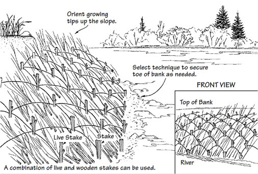

Brush or Vegetation Mats
What is it?
Brush/vegetation mats (also called brush mattresses) is a bioengineering technique utilizing dormant branch cuttings woven together to create a protective barrier for actively eroding banks. Branch cuttings should be regionally appropriate, easily root from cuttings, and be able to withstand high water velocities. Dormant cuttings will provide additional streambank protection as the cuttings begin to root and become established on the bank. Brush mats can capture sediment and seeds from storm events providing a suitable substrate for vegetation to become reestablished on the bank.
 (diagram from Streambank revegetation and protection: a guide for Alaska)
Conservation Benefits
- Stabilizes eroding banks and slopes which will preserve riparian vegetation and habitat
- Traps excess sediment which can cover instream habitat important for aquatic species
- Traps seeds and provides medium for germination and growth. This promotes the establishment of riparian vegetation
- Established vegetation can eventually provide bank stability and instream aquatic habtiat
What does it include?
Brush mats are used for stream bank stabilization if the bank slope does not exceed a 2:1 slope gradient. Bank slopes can be grated to decrease the slope ratio. Brush mats are created with dormant woody species woven or secured together to create the main mat. Woody species should be harvested during the dormant season, should sprout from cuttings (like willow or cottonwood), and be regionally appropriate. Live fascines should be dispersed throughout the mat to help secure the mat to the bank. The mat should also be secured to the bank using live stakes, dead stakes, or coir logs may also be needed to secure the mat to the bank. The mat will immediately reduce water velocities against the bank and act as a catchment for soil and seeds promoting natural bank revegetation. The live cuttings will also act to stabilize the bank as they begin to root during the next growing season.
Brush or Vegetation Mats Links